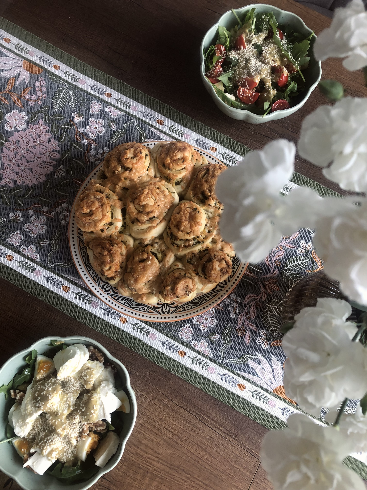

Wytrawne
Podkręcony chlebek serowo-ziołowy
Puszysty chlebek drożdżowy z masłem serowo-ziołowym, czosnkiem, cheddarem i parmezanem.

Składniki
Ciasto
- 40 g świeżych drożdży
- 300 ml ciepłej wody
- 1 łyżeczka cukru
- 600 g mąki pszennej
- 4 łyżki oleju, np. rzepakowego
- 2 łyżeczki soli
Masło serowo-ziołowe
- 100 g miękkiego masła
- 1 pęczek natki pietruszki
- 100 g sera cheddar
- ½ łyżeczki soli
- 3 ząbki czosnku
- 1/3 łyżeczki pieprzu
Dodatkowo
- 50 g parmezanu
Przygotowanie
- Drożdże rozrobić z połową wody i cukrem. Odstawić w ciepłe miejsce na ok. 15 minut (do momentu gdy zaczną się pienić).
- Do dużej miski przesiać mąkę pszenną, dodać sól, olej roślinny, pozostałą wodę i zaczyn drożdżowy. Wymieszać składniki do połączenia, a następnie dokładnie wyrobić ciasto. Odstawić je do wyrośnięcia na ok. godzinę (do podwojenia objętości).
- Do miski zetrzeć cheddar, dodać drobno posiekaną pietruszkę, przeciśnięty przez praskę czosnek, miękkie masło, sól oraz pieprz. Dokładnie wymieszać do połączenia.
- Wyrośnięte ciasto rozwałkować na prostokąt, posmarować masełkiem i kroić na ok. 5 cm paski. Zwijać je w harmonijkę lub w rulonik jak cynamonki. Układać w wyłożonej papierem tortownicy o średnicy 24 cm. Następnie odstawić do wyrośnięcia, pod lnianym ręcznikiem na około 30 min.
- Na wyrośnięty chlebek zetrzeć parmezan. Następnie włożyć go do rozgrzanego do 190 stopni w trybie góra-dół piekarnika i piec około 30–40 minut.